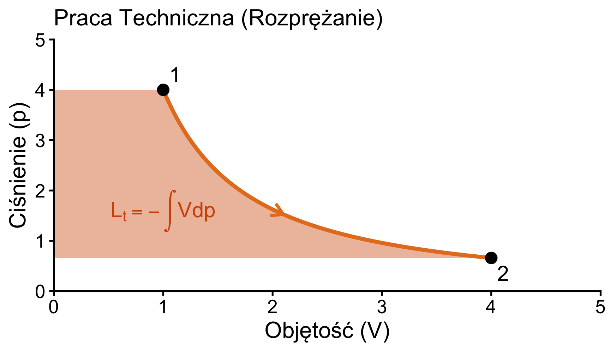
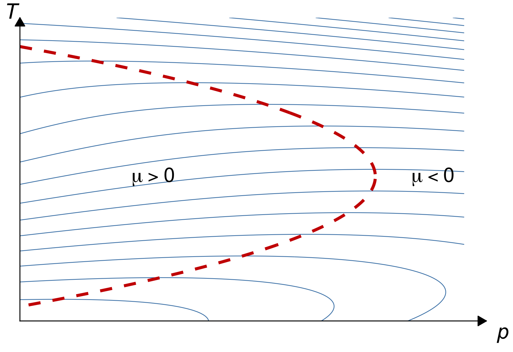

W3: I Zasada Termodynamiki - cz. II
Bilans Energii w Układach Otwartych
prof. UPP dr hab. inż. Marek Urbaniak
Wydział Inżynierii Środowiska i Inżynierii Mechanicznej


Pojęcie Pracy Technicznej
- Sprężanie (\(dp > 0\)): praca jest wykonywana nad układem (\(đL_t < 0\)).
- Rozprężanie (\(dp < 0\)): praca jest wykonywana przez układ (\(đL_t > 0\)).
- Nadal nie uwzględniamy tu tarcia
\[L_t = L_{1-2} + L_n + L_w = L_{1-2} + p_1 V_1 - p_2 V_2\]
gdzie: \(L_n = p_1 V_1\) – praca napełniania (wprowadzenia czynnika), \(L_w = -p_2 V_2\) – praca wytłaczania (wyprowadzenia czynnika).
\[\begin{aligned} đL_t &= -V\,dp \\ L_t &= -\int_{p_1}^{p_2} V(p)\,dp \end{aligned}\]
Definicja
W układzie \(p-V\), pracę techniczną przedstawia pole pomiędzy krzywą przemiany a osią rzędnych (\(p\)).
Układy Otwarte
Kontrola Przepływu Materii
W układach otwartych (np. turbina, sprężarka) przez granice układu (osłonę bilansową) przepływa czynnik roboczy.
- Należy uwzględnić pracę przetłaczania (wprowadzenia i wyprowadzenia czynnika).
- Bilans energii musi uwzględniać strumienie entalpii wchodzące i wychodzące.
Równanie Przepływu Ustalonego
Postać Ogólna Bilansu Mocy
Dla maszyny działającej w sposób ustalony (strumień masy \(\dot{m} = const\)):
\[ \underbrace{\dot{Q} - \dot{L}_{t}}_{\substack{\text{Moc wymienna} \\ \text{z otoczeniem}}} = \dot{m} \left[ \underbrace{(h_2 - h_1)}_{\Delta \text{Entalpii}} + \underbrace{\frac{w_2^2 - w_1^2}{2}}_{\substack{\Delta \text{En. Kinetycznej} \\ (\text{tu } w \text{ to prędkość!})}} + \underbrace{g(z_2 - z_1)}_{\Delta \text{En. Potencjalnej}} \right] \]
Gdzie:
- \(\dot{Q}\) – strumień ciepła (moc cieplna) [W]; \(\dot{Q} > 0\) – ciepło doprowadzone.
- \(\dot{L}_{t}\) – moc techniczna (na wale) [W]; \(\dot{L}_{t} > 0\) – praca wykonana przez czynnik.
- \(\dot{m}\) – strumień masy czynnika [kg/s]
- \(h\) – entalpia właściwa [J/kg].
- \(w\) – prędkość przepływu [m/s].
- \(g \Delta z\) – energia potencjalna [J/kg].
- \(z\) – wysokość [m]
Zastosowanie: Turbina
Ekspansja Czynnika
W turbinach (parowych lub gazowych) czynnik rozpręża się, wykonując pracę techniczną.
- Zazwyczaj proces jest adiabatyczny (\(\dot{Q} \approx 0\)).
- Zmiany energii kinetycznej i potencjalnej są często pomijalne.
Uproszczony bilans: \[ P_i = \dot{L}_t = \dot{m} (h_1 - h_2) > 0 \] Gdzie \(P_i\) to moc wewnętrzna turbiny (praca wykonana przez czynnik, więc \(\dot{L}_t > 0\)).
Wniosek
Zmniejszenie entalpii czynnika (\(h_1 > h_2\)) zamienia się na pracę na wale.
Zastosowanie: Sprężarka i Pompa
Kompresja Czynnika
Urządzenia te wymagają dostarczenia pracy z zewnątrz, aby podnieść ciśnienie czynnika.
- Moc techniczna sprężarki jest ujemna: \(\dot{L}_t < 0\) (praca jest doprowadzana do czynnika).
- W pompach (ciecz nieściśliwa) praca techniczna wynosi: \(l_t = -v \Delta p\) (praca napędowa \(|l_t| = v \Delta p\)).
Bilans dla sprężarki (moc napędowa \(P_d\)): \[ P_d = -\dot{L}_t = \dot{m} (h_2 - h_1) - \dot{Q} > 0 \]
Wniosek
Musimy dostarczyć pracę (\(h_2 > h_1\)), aby zwiększyć entalpię (i ciśnienie) czynnika.
Praca Sprężania Gazu Doskonałego
W przypadku powietrza (gaz dosk.) często modelujemy sprężanie jako politropę
(\(pv^n=const\)). Wzór inżynierski na pracę techniczną:
\[ l_t = \frac{n}{n-1} R T_1 \left[ 1 - \left(\frac{p_2}{p_1}\right)^{\frac{n-1}{n}} \right] \]
Przy sprężaniu (\(p_2 > p_1\)) \(l_t < 0\) – praca napędowa sprężarki wynosi \(|l_t|\).
Zastosowanie w Projekcie (Ćw. 2)
- Gdy \(n = \kappa \approx 1{,}4\) \(\rightarrow\) Izentropa (adiabata odwracalna: brak chłodzenia i tarcia).
- Gdy \(n = 1\) \(\rightarrow\) Izoterma (idealne chłodzenie): \(l_t = -R T_1 \ln\frac{p_2}{p_1}\).
- Sprężarka chłodzona: \(1 < n < \kappa\) (częściowe chłodzenie); sprężarka niechłodzona z tarciem: \(n > \kappa\).
Zastosowanie: Wymiennik Ciepła
Przepływ Izobaryczny
W wymiennikach (np. chłodnica, nagrzewnica) nie wykonuje się pracy technicznej
(\(L_t = 0\)).
Bilans dla jednego czynnika: \[ \dot{Q} = \dot{m} (h_2 - h_1) \]
Dla wymiennika dwupłynowego (adiabatycznego z zewnątrz): \[ \dot{m}_A \Delta h_A = -\dot{m}_B \Delta h_B \]
Zastosowanie: Dławienie
Proces Izentalpowy
Dławienie zachodzi podczas przepływu przez zawór lub zwężkę bez wymiany ciepła i pracy.
\[ h_1 = h_2 \]
- Dla gazu doskonałego temperatura nie ulega zmianie.
- Dla gazów rzeczywistych występuje efekt Joule’a-Thomsona (zmiana temperatury).
Zjawisko Joule’a-Thomsona
Dławienie Adiabatyczne
Współczynnik Joule’a-Thomsona \(\mu_{JT}\) określa zmianę temperatury przy dławieniu izentalpowym (\(h = const\)):
\[ \mu_{JT} = \left(\frac{\partial T}{\partial p}\right)_h \]
- \(\mu_{JT} > 0\): Gaz ochładza się przy dławieniu (spadek \(p \Rightarrow\) spadek \(T\)). Typowe zjawisko dla powietrza w temp. pokojowej.
- \(\mu_{JT} < 0\): Gaz ogrzewa się (częsta cecha dla wodoru czy helu w temp. otoczenia).
- Temp. inwersji (\(T_{inv}\)): Miejsce, gdzie \(\mu_{JT} = 0\). Oddziela obszar ochładzania od ogrzewania.
Wodór vs Powietrze
W temp. \(\approx 300\) K powietrze przy dławieniu ochładza się (\(T_{inv} \approx 620\) K). Natomiast wodór się ogrzewa (\(T_{inv} \approx 202\) K) – nawet przy dławieniu z 700 bar tylko o kilkadziesiąt kelwinów (ok. 30 K). Sam efekt J-T nie wywołuje więc samozapłonu wodoru (\(T_{\text{samozapłonu}} \approx 858\) K).
Krzywa Inwersji (Zjawisko J-T)
Krzywa inwersji (czerwona przerywana linia) łączy wierzchołki izentalp (niebieskie linie), rozdzielając obszar ochładzania gazu od ogrzewania.

I Zasada w Procesach Spalania
Przemiana Energii Chemicznej
Komora spalania to najczęściej układ otwarty izobaryczny, w którym nie wykonuje się pracy technicznej (\(L_t = 0\)), ale uwalnia ogromną ilość ciepła utleniania.
Wartość opałowa (\(Q_i\)):
Ciepło wydzielone ze spalenia jednostki paliwa (kg lub \(m^3\)), przy założeniu, że para wodna w spalinach nie skrapla się. Uwaga praktyczna: brak kondensacji pary wodnej w spalinach chroni kanały spalinowe przed korozją.
Bilans energii komory spalania: \[ \dot{H}_{\text{substr.}} + \dot{m}_{\text{pal}} \cdot Q_i = \dot{H}_{\text{spalin}} + \dot{Q}_{\text{strat}} \]
I Zasada w Procesach Spalania
Kontekst praktyczny: Zasada ta jest fundamentem podczas projektowania kotłów, turbin gazowych i samochodowych silników spalinowych, pozwalając na precyzyjne wyliczenie temperatury spalania roboczego.
Rola Powietrza jako Chłodziwa
W układach silnikowych (np. turbina odrzutowa) komora spalania wykorzystuje ogromny nadmiar powietrza (\(\lambda \approx 3\text{–}4\)), aby chłodzić elementy płomieniówki i chronić łopatki wirnika przed stopieniem od gorących gazów!
Analiza Egzergetyczna (Wstęp)
Energia Dostępna
Egzergia to maksymalna praca, jaką układ może wykonać, przechodząc do stanu równowagi z otoczeniem.
- I Zasada mówi o ilości energii (zachowanie).
- II Zasada mówi o jakości energii (degradacja).
- Strata egzergii (\(\delta B\)): Jest proporcjonalna do przyrostu entropii układu izolowanego (prawo Gouy–Stodoli): \(\delta B = T_{\text{ot}} \cdot \Delta S_{\text{iz}}\).
Podsumowanie W3
Kluczowe Wnioski
- Układy Otwarte: Wymagają uwzględnienia pracy technicznej (\(L_t\)) i entalpii (\(H\)).
- Równanie Bilansu energii dla przepływu ustalonego (turbiny, sprężarki, wymienniki).
- Praca Techniczna: Pole do osi rzędnych (\(p\)).
- Dławienie: Proces izentalpowy (\(h=const\)), któremu może towarzyszyć zmiana temperatury (J-T).
Przejście do W4
Właściwości Substancji Czystych
W następnym module nauczymy się, jak wyznaczać parametry dla substancji zmieniających fazę:
- Korzystanie z tablic pary wodnej.
- Praca z wykresami h-s (Molliera) oraz p-h.
- Obliczanie stopnia suchości pary mokrej (\(X\)).
Termodynamika Techniczna (W3)